Scarborough viewed from the Sands, which Anna Whistler, James, and Willie visited in June–July
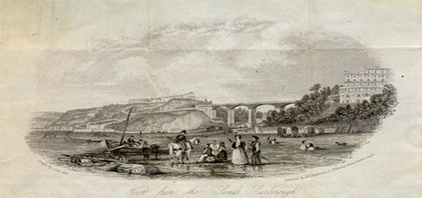
John Bell. View from the Sands, Scarborough. Engraved by Theakston, 31 St. Nicholas Street, Scarborough. From a sheet of writing paper used by James Whistler in 1847 to write to his father. (James Whistler to Major George Washington Whistler, Preston, entry for July 3 in a letter of Monday, June 21, [18]47, GUL: Whistler Collection, W654). [The digital version of this image is from a Glasgow University Special Collections Department online article, posted on their old (pre-2010) website. It may become obsolete.]
Image 464
Cooper Hill, Walton-le-dale, Lancashire, home of Charles Swainson, where James celebrated his thirteenth birthday in July 1847
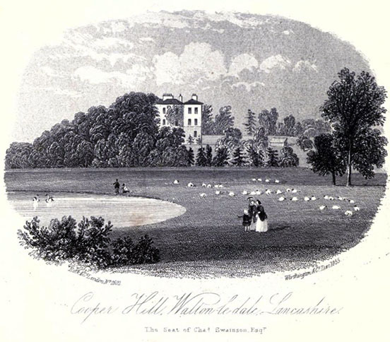
Cooper Hill, Walton-le-dale, Lancashire. Seat of Charles Swainson Esqr. 1855. Lithograph. (Hardwick, History of Preston, facing p. 568) [full resolution image]
Image 465
Anna Whistler, James, and Willie walked through the grounds of Hornby Castle en route to Preston in the summer of 1847.
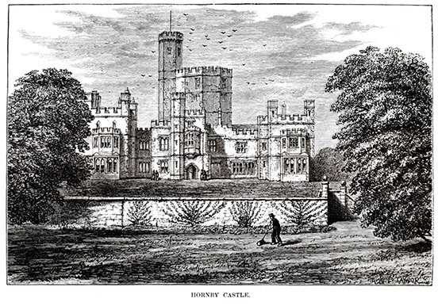
Hornby Castle (James Hogg, ed. Fortunes Made in Business: A Series of Original Sketches Biographical and Anecdotal from the Recent History of Industry and Commerce by Various Writers, 3 vols. [London: Sampson Low, Marston, Searle, & Rivington, 1884–1887], vol. 2, p. 58) [full resolution image]
Image 466
Anna Whistler, James, and Willie saw Hornby Church while en route to Preston in the summer of 1847.
Chaddock Hall, home of Robert Smith, cotton mill owner, which Anna Whistler, James, and Willie visited in 1847 and Deborah had visited in 1846, when in England for her health’s sake
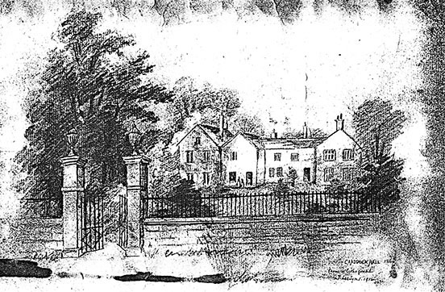
Chaddock Hall, 1860. 1912. Sketch from a lithograph. Courtesy of J.H.R. Cunliffe. [full resolution image]
Image 468
Anna Whistler revisited Worsley in July 1847, a year after St. Mark’s Church and the new mansion of Lord Francis Egerton, 1st Earl of Ellesmere, were completed and he was raised to the Peerage.
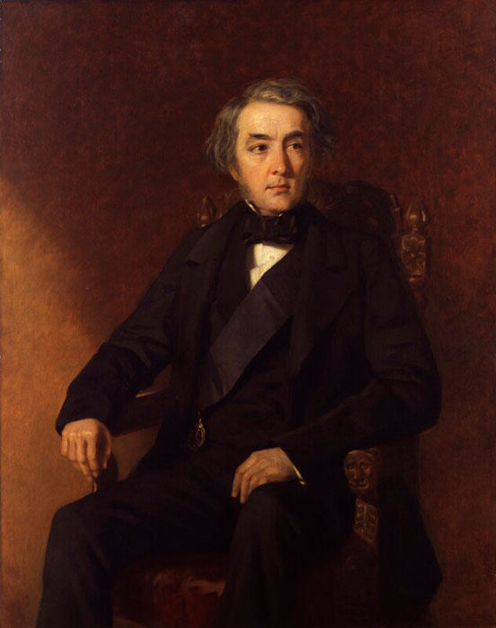
Edwin Longsden Long (1829–1891). Francis Egerton, 1st Earl of Ellesmere. c. 1850. Oil on canvas. 50 x 40 1/8 in. (127 x 102 cm). National Portrait Gallery, London (NPG 5524).
Image 469
Agnes (Walton) Ryley was a friend of Eliza Winstanley’s in Preston
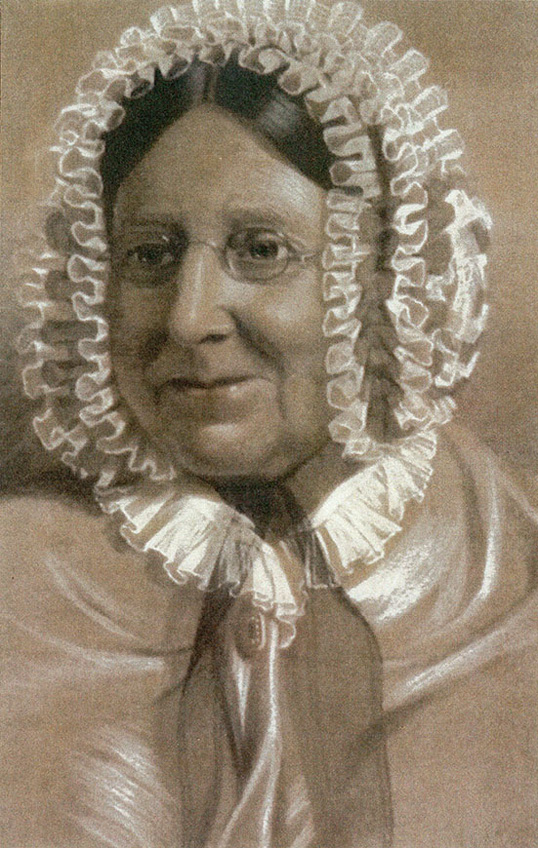
Portrait of Agnes (Walton) Ryley c. 1870. Courtesy of David Hunt, Preston, Lancashire. [full resolution image]
Image 470
One of the mills owned by “Cotton Lords” of Preston, some of whom, Anna Whistler mentions, came to consult John Winstanley
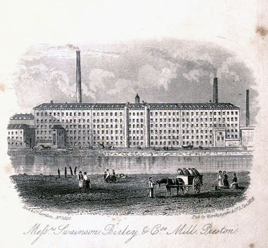
Messrs Swainson Birley & Co Mill Preston. 1856. Lithograph. (Hardwick, History of Preston, facing p. 425) [full resolution image]
Image 471
The Philosophical Institution and residence of W. Ainsworth, a friend of the Winstanleys, in Preston
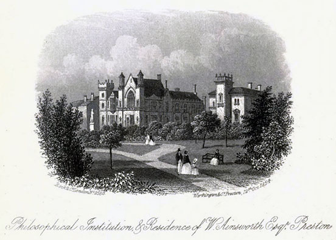
Philosophical Institution and Residence of W. Ainsworth, Esqr Preston. 1854. Lithograph. (Hardwick, History of Preston, facing p. 451) [full resolution image]
Image 472
Deborah Delano Whistler and Francis Seymour Haden were married in the Parish Church in Preston on 16 October 1847.
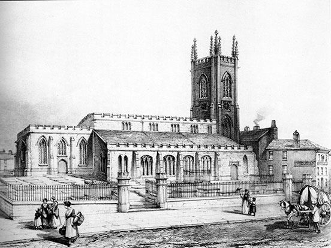
William Physick. Preston Church, about 1845. (Hunt, History of Preston, p. 31). [full resolution image]
Image 473
Members of Dr. William Winstanley’s household came to the home of his brother John Winstanley to congratulate Deborah (Whistler) Haden and Francis Seymour Haden on their wedding day, 16 October 1847.
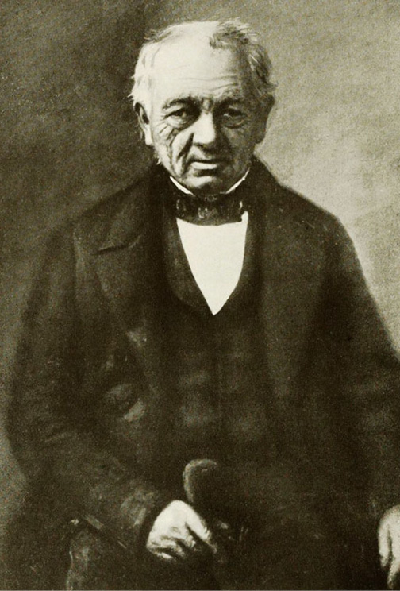
William Winstanley. (Brockbank, Sketches of the Lives of the Medical Staff of the Manchester Infirmary, facing p. 241) [full resolution image]
Image 474
Anna Whistler mentioned the Strand in October 1847, when she and her family were about to depart London for St. Petersburg after Deborah Delano Whistler’s marriage to Francis Seymour Haden.
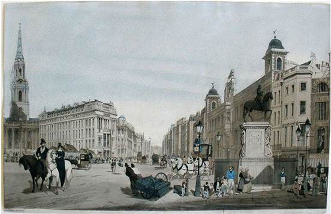
Thomas Shotter Boys (1803–1874). Entry to the Strand from Charing Cross. 1842. Lithograph. (Thomas Shotter Boys, Original Views of London as it is, 1842: A Re-issue of the Complete Set of These Scarce and Valuable Delineations of London, with Descriptive Notes to Each Plate, and a Short Introduction by E. Beresford Chancellor [London: Architectural Press, 1926], p. 85, plate 19) [full resolution image]
Image 475
Anna Whistler mentioned her visit in October 1847 to Westminster Abbey, when James could not draw because a service was about to start.
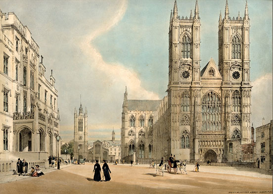
Thomas Shotter Boys (1803–1874). Westminster Abbey. 1842. Lithograph. (Boys, Original Views of London, p. 43, plate 8) [full resolution image]
Image 476
Anna Whistler mentioned walking through St. James’s Park and seeing Buckingham Palace before embarking for St. Petersburg in October 1847.
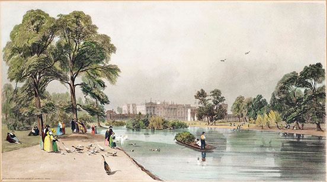
Thomas Shotter Boys. Buckingham Palace from St. James’s Park. 1842. Hand-colored lithograph. Private collection. (Boys, Original Views of London, p 51, plate 10) [full resolution image]
Image 477
Anna Whistler records in 1847 having attended a service at Holy Trinity Church on Sloane Street, the parish church of Francis Seymour and Deborah (Whistler) Haden